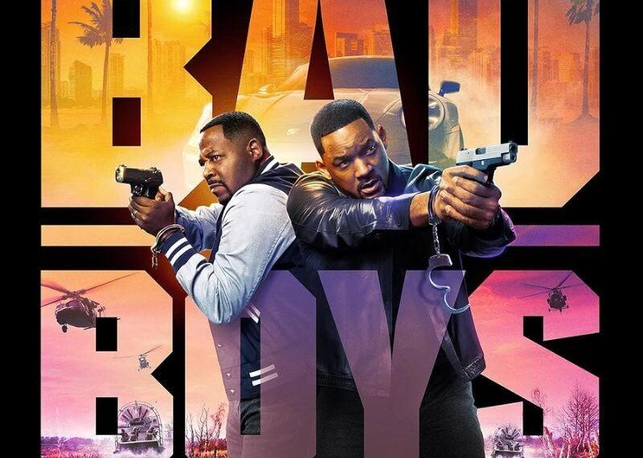
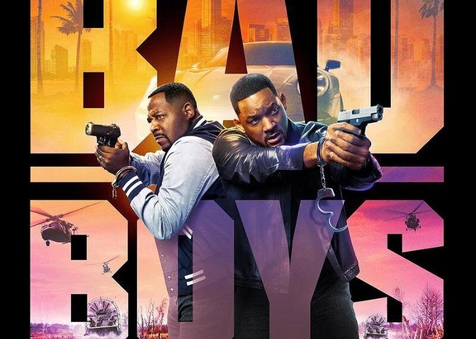
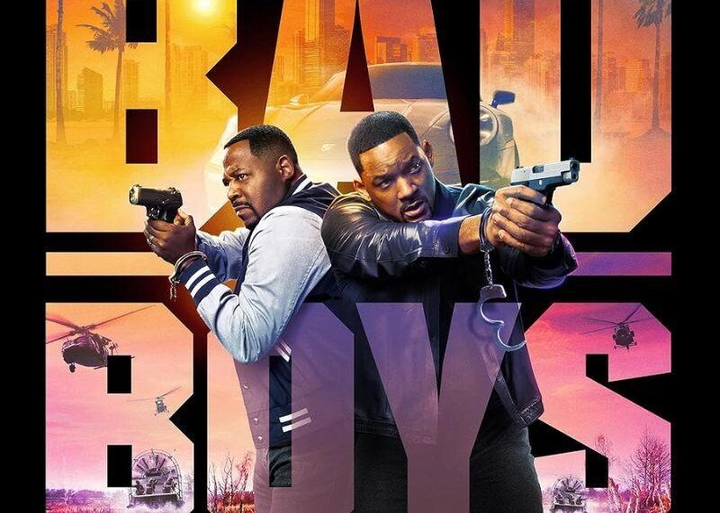
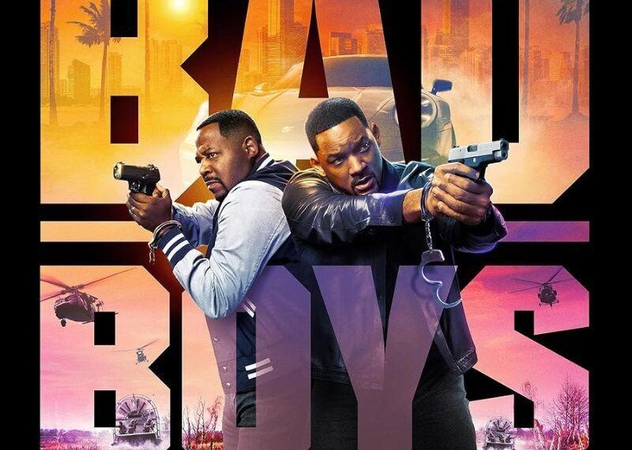

Detectives Mike Lowrey and Marcus Burnett have 72 hours to find $100 million worth of heroin before Internal Affairs shuts them down. Mike becomes more invo lved after a friend is murdered by the drug dealers . Matters become complicated when Mike and Marcus have to switch places to c onvince a witness of the murder to cooperate. Principal photography began on June 27 in downtown Miami and wrapped August 31, 1994.
Mike and Marcus head up a task force investigating the flow of ecstasy into Miami. Their search leads to a dangerous kingpin Johnny Tapia, whose plan to control the city's drug traffic has touched off an underground war. Meanwhile, Mike and Syd, Marcus's sister, are in a secret relationship
In June 2008, Michael Bay stated that he might direct Bad Boys for Life, but that the greatest obstacle to the potential sequel would be the cost, as he and Will Smith demand some of the highest salaries in the film industry.[ 1] By August 2009, Columbia Pictures had hired Peter Craig to write the script for Bad Boys III.[2] In February 2011, Martin Lawrence reiterated that the film was in development.[3] In June 2014, Jerry Bruckheimer announced that screenwriter David Guggenheim was working on the storyline for the sequel.[4] Two months later, Lawrence said a script had been written and parts had been cast.[5] By June 2015, director Joe Carnahan was in early talks to write and possibly direct the film.[ 6] Two months later, Sony Pictures Entertainment announced that Bad Boys III would be released on February 17, 2017. On March 4, 2016, the film was pushed to June 2, 2017 .[7] Producers had planned to begin production in early 2017.[8]
In January 2020, a fourth film entered development, with Chris Bremner serving as screenwriter. Smith and Lawrence will reprise their roles from the previous three movies.[23] In April 2022, production for the film was reportedly halted due to the incident with Smith slapping Chris Rock at the 2022 Academy Awards ceremony and the subsequent investigation.[24] In February 2023, Smith announced that the fourth film was in pre-production.[25] That same month, it was reported by musician/disc jockey Questlove that Smith had to drop out of a planned surprise appearance at the 65th Grammy Awards because filming for the fourth Bad Boys film had started earlier that week.[26] Principal photography began on April 3, 2023 in Atlanta, Georgia.[27] The film was released in the United States on June 6, 2024.[28